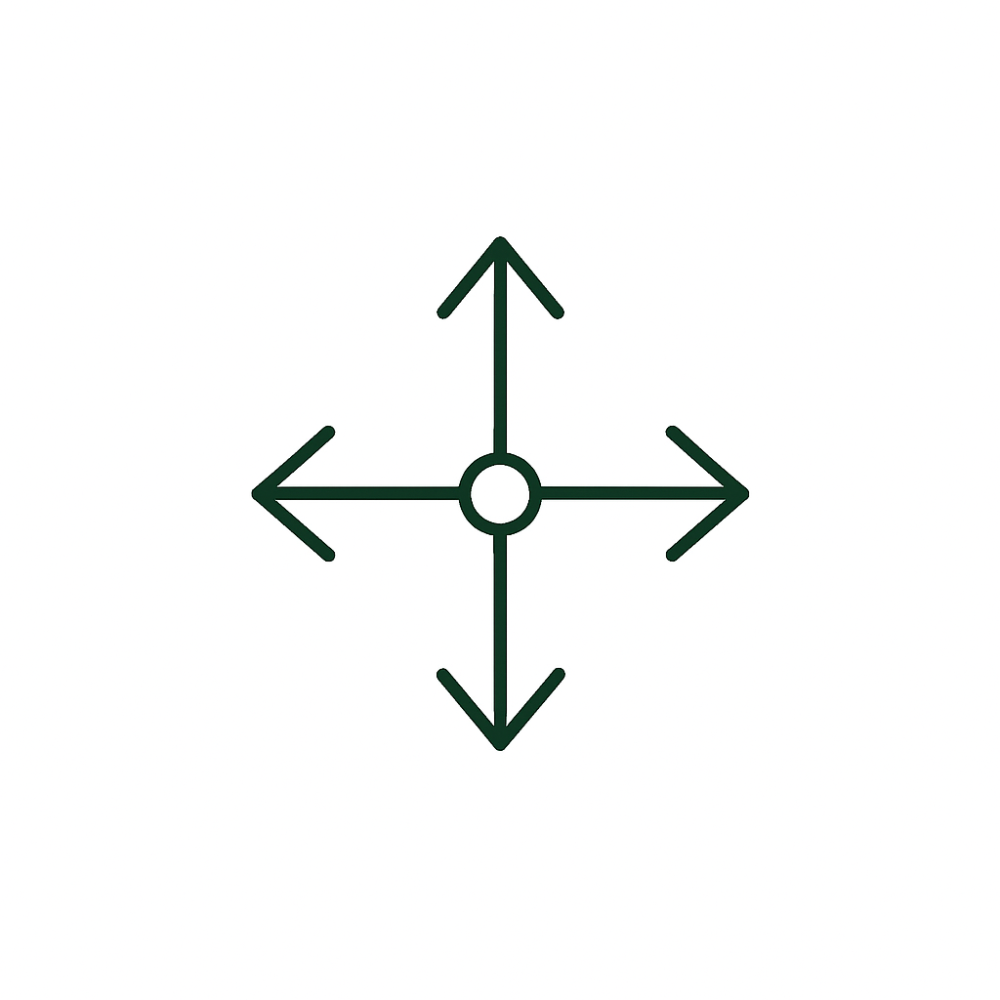
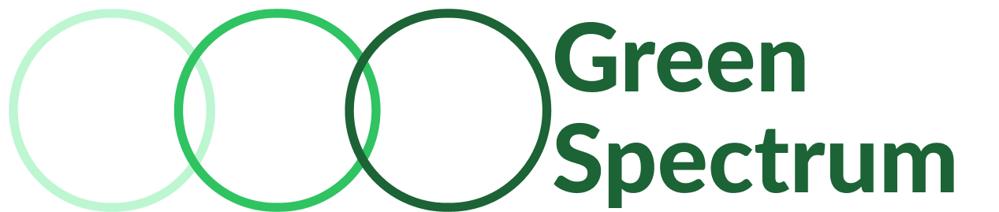
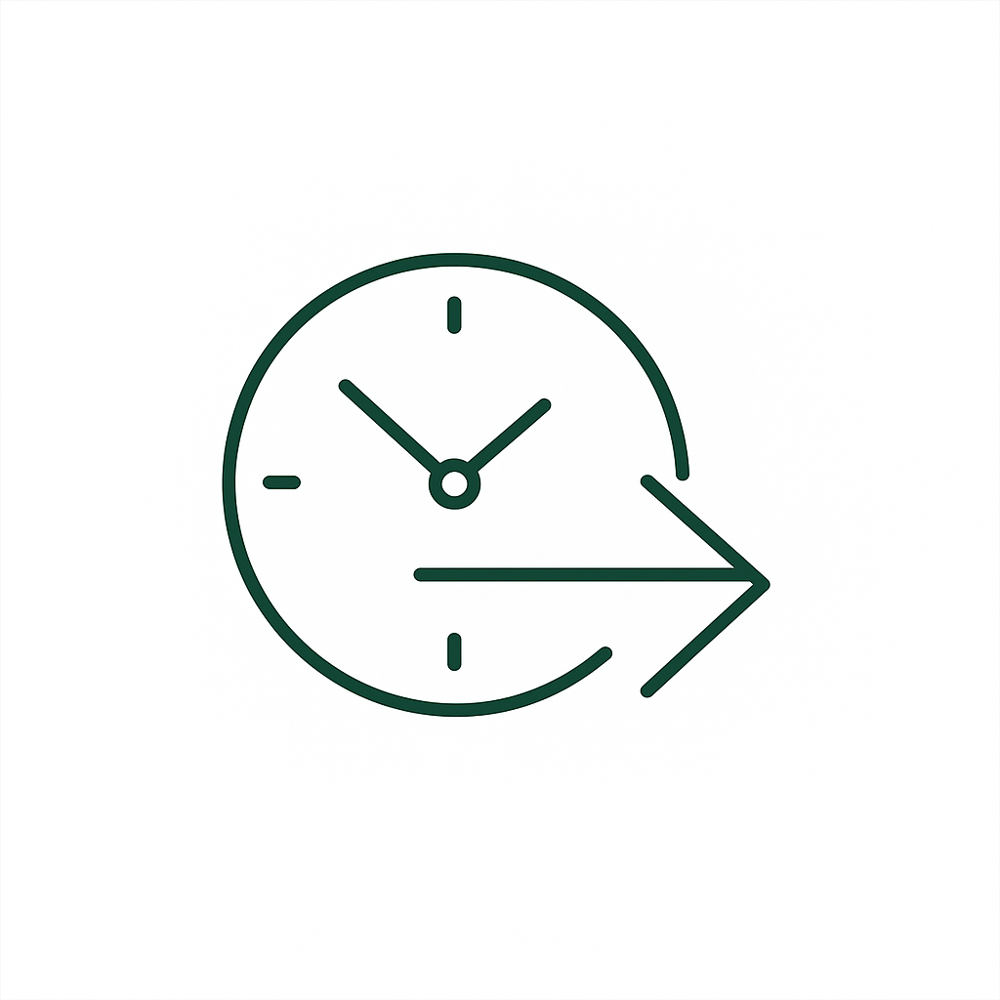

Competing priorities
Bring climate, nature, people, governance, regulation and commercial pressure into one decision view.

Start Your JourneyFOR CHIEF SUSTAINABILITY OFFICERS
Green Spectrum helps you align teams, prioritise complex challenges, assign ownership and move from reporting pressure to credible action.
Use it independently, asynchronously or to facilitate a group.
Why Green Spectrum
Green Spectrum helps sustainability leaders work through competing priorities, fragmented evidence, unclear ownership and pressure to show progress without unsupported claims.

Bring climate, nature, people, governance, regulation and commercial pressure into one decision view.
Connect reports, operational data, stakeholder knowledge and assumptions without hiding uncertainty.
Clarify which decisions need attention, who is involved and what evidence is strong enough to act on.

Make a credible next move while recording evidence gaps, risks, owners and review points.
Measurable outcomes
A prioritised view of evidence, gaps, assumptions and strategic risks.
Shared understanding across functions, visible trade-offs and agreed ownership.
Named decisions, experiments, measures and review dates.
How Green Spectrum works
The public website explains the offer. The platform supports the work. The playbook and canvases support facilitated collaboration.
Choose your route
Choose the route that matches your situation. You can move between routes at any time.
Best use: early framing, evidence review and individual preparation.
Expected output: focused challenge brief and next action.
Working asynchronouslyBest use: gather distributed knowledge without adding another meeting.
Expected output: shared evidence base and visible assumptions.
Facilitating a groupBest use: align stakeholders, surface trade-offs and assign ownership.
Expected output: prioritised decisions and experiment plan.
The six-step process
A consistent process for moving from fragmented evidence to prioritised decisions and practical experiments.
Typical use: one focused workshop, several asynchronous sessions, or a multi-week programme.
Start with OnboardingView Tools and Downloads
What is happening across people, the organisation and the planet?
Output: Shared evidence base
Where do activities, impacts and dependencies occur?
Output: Impact and system map
What kind of challenge is this?
Output: Maturity and complexity profile
Which challenges should receive attention first?
Output: Ranked challenge portfolio
What is the most credible next move?
Output: Decision pathway
What can be tested before scaling?
Output: Experiment and learning planLearning from Experiment feeds back into Discover, so the next cycle starts with better evidence.
Digital Platform
Add organisational context, reports, evidence and stakeholder knowledge. Green Spectrum helps structure the information, identify gaps, assess maturity and recommend priorities and next actions.
Transformation Playbook
Use the playbook to frame challenges, prepare participants, run structured activities and turn discussion into decisions, ownership and experiments.
Preview
The playbook explains when to use each stage, what to prepare, how to involve stakeholders and how to turn workshop outputs into digital decisions.
Canvases and Tools
Resources are organised by the six stages, so tools support the journey rather than becoming another unstructured download grid.
Purpose: gather business, human and planetary evidence.
Output: shared evidence base
PDF 30-60 min · Previous: Onboarding · Next: MapPreview / Download / Use in PlatformPurpose: map activities, impacts, dependencies and evidence gaps.
Output: impact and system map
Workshop 45-90 min · Previous: Discover · Next: StructurePreview / Download / Use in PlatformPurpose: classify maturity and complexity before choosing a response.
Output: maturity and complexity profile
Platform 30-60 min · Previous: Map · Next: PrioritisePreview / Download / Use in PlatformPurpose: compare opportunities and select focus.
Output: ranked challenge portfolio
Workshop 45-75 min · Previous: Structure · Next: DecidePreview / Download / Use in PlatformPurpose: choose the most credible next move.
Output: decision pathway
Platform 30-45 min · Previous: Prioritise · Next: ExperimentPreview / Download / Use in PlatformPurpose: define the test, owner, measure and review point.
Output: experiment and learning plan
PDF 30-60 min · Previous: Decide · Next: DiscoverPreview / Download / Use in PlatformHybrid working
Technology can organise information. People still need to interpret it, challenge it and decide what to do.
Set context and gather the first evidence base.
Let colleagues add evidence and perspective over time.
Use live time for interpretation, disagreement and ownership.
Record decisions, experiments and learning.
Ways to use Green Spectrum
For ongoing individual and organisational use.
For self-guided or facilitated workshops.
For teams needing capability-building or implementation support.
Developed through iterative testing with sustainability, design and consulting professionals.
Need clarity before starting?
No. Green Spectrum supports the thinking and decision-making that often needs to happen before reporting, implementation and investment. It can use reporting data as evidence, but its primary purpose is strategic navigation and organisational change.
No. Green Spectrum records evidence confidence and gaps so users can distinguish what is known, assumed or still unclear.
Yes. Solo Mode is designed for sustainability leaders conducting research, planning, problem framing or early-stage strategy work independently.
Involve others when the challenge depends on knowledge, experience, authority or ownership that sits beyond one role.
Use the facilitation tools when the process would benefit from shared interpretation, stakeholder input, collective ownership or live systems mapping.
No. The Green Spectrum process determines which tool is useful. The tools support the work but should not become additional administrative burden.
A focused journey may be completed across several short sessions. Larger organisational challenges may require repeated cycles.
Yes. Green Spectrum is iterative. New evidence may require users to revisit exploration, mapping, structuring or prioritisation.
Yes. Individual outputs and consolidated reports should be exportable. The Resources and Downloads page contains the reusable Green Spectrum tools and reference materials.
No. The process should adapt to different sectors, organisation sizes and sustainability maturity levels.
No. It supports structured thinking and decision-making. Some challenges will still require specialist expertise, facilitation, technical analysis or external assurance.
Information entered into the platform is used to connect context, evidence, insights, priorities, decisions and experiments within the active workspace.
You should have a context profile, evidence map, maturity profile, prioritised challenge portfolio, decision rationale, pathway and experiment plan.
Success is measured through decision confidence, evidence completeness, stakeholder alignment, ownership assigned, experiments launched and review milestones completed.
The platform includes guided evidence capture, maturity assessment, challenge classification, priority comparison, decision support and output generation.
The public website and selected resources explain the method. Downloadable playbook and canvas materials support self-guided work. Facilitation and training support teams that need live capability-building.
Create an organisation profile, define the context and start building a clearer path through your sustainability challenges.
Team Mode will use the outputs from Solo Mode as structured discussion material. Colleagues can review assumptions, add evidence, compare viewpoints and agree ownership without restarting the process from blank canvases.